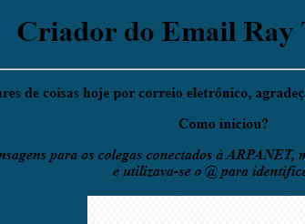

Ray Tomlinson
Um dos meus primeiros projeto em HTML onde tivemos que fazer sobre alguma pessoa famosa que foi importante para a evolução da internet ou algum meio de comunicação.
Um dos meus primeiros projeto em HTML onde tivemos que fazer sobre alguma pessoa famosa que foi importante para a evolução da internet ou algum meio de comunicação.
Tem como base uma ilusão de ótica, pois dá a impressão ao olho humano de que objetos ou pessoas estão em movimento, mais perto ou afastados. Assim, esse recurso de webdesign causa a sensação de que imagens distantes se movimentam mais devagar do que os objetos que estão próximos.